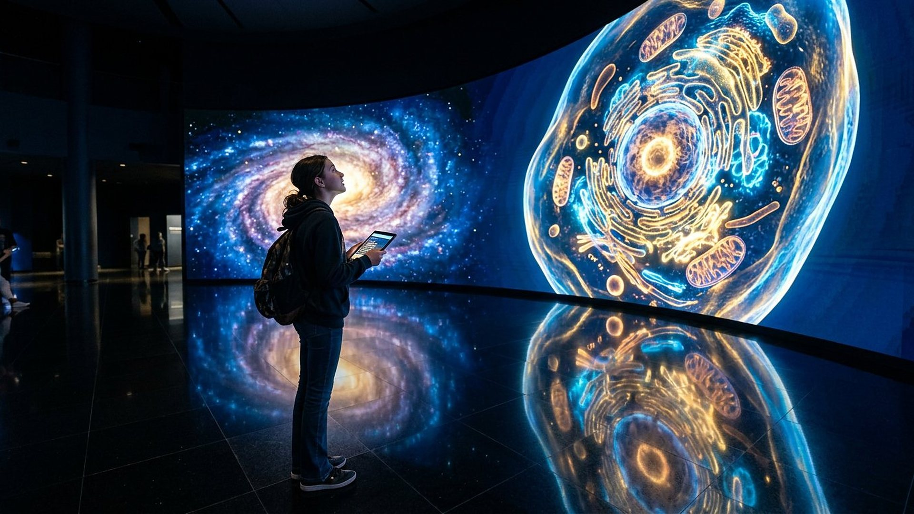

Accueil → Comment fonctionne le musée
Comment fonctionne le musée
Quatre modes d'affichage, la visite hors connexion, les transcriptions et les réglages d'accessibilité, expliqués en français clair.

Technique, en français clair
Quatre façons d'afficher le même voyage
Le voyage entre les échelles utilise, selon votre appareil, l'une des quatre solutions suivantes. Elles affichent toutes les dix mêmes étapes, les mêmes faits vérifiés et les mêmes commandes. Si la plus riche échoue, la suivante prend le relais automatiquement, sans jamais interrompre la visite.
- Premier choix
Interface de calcul graphique de nouvelle génération — que les spécialistes appellent WebGPU (interface web de calcul graphique). Elle dessine les anneaux lumineux directement sur le processeur graphique, avec un petit programme de nuanceur (un programme de calcul des couleurs) écrit en WGSL (langage des nuanceurs de cette interface).
- Deuxième choix
Interface graphique de deuxième génération — appelée WebGL2 (interface web graphique, version 2). Elle produit le même effet avec le langage GLSL (langage des nuanceurs graphiques) et fonctionne sur la grande majorité des navigateurs récents.
- Troisième choix
Dessin procédural en deux dimensions — un canevas (une zone de dessin) calculé par le navigateur, sans accélération matérielle. Les anneaux sont tracés avec des cercles et des dégradés : l'effet est plus simple, mais toujours animé.
- Quatrième choix
Image JPG seule — aucune animation, uniquement les dix photographies numériques. C'est le repli utilisé si les trois précédents sont indisponibles, ou si vous avez demandé à votre système de réduire les animations.
Un seul mot d'ordre : jamais de contenu dépendant du graphisme
Les dix étapes, leurs textes, leurs sources et leurs boutons sont du simple texte et des images. L'animation n'est qu'un habillage : si vous la désactivez, vous ne perdez aucune information.
Commandes
Naviguer à votre rythme
- Boutons : « Étape précédente » et « Étape suivante » avancent d'un palier.
- Clavier : les flèches gauche et droite, ainsi que haut et bas, changent d'étape quand la galerie a le focus. Les touches Début et Fin vont à la première et à la dernière étape.
- Souris ou doigt : faites défiler la galerie horizontalement, le compteur se met à jour.
- Lecture automatique : enchaîne les dix étapes toutes les 3,6 secondes. Ce bouton est masqué si votre système demande la réduction des animations.
Autonomie
Un musée consultable sans réseau
Dès votre première visite, un petit programme local — un agent de service, appelé service worker (agent de mise en cache) — enregistre les pages, les images, les feuilles de style, les scripts et les pistes audio. Ensuite, coupez la connexion : l'accueil, les vingt-deux salles et l'audioguide restent disponibles. Aucune donnée n'est envoyée à un serveur, aucun traceur (aucun cookie, c'est-à-dire aucun fichier de suivi) n'est déposé, et votre choix de contraste reste stocké uniquement sur votre appareil.
Audioguide
Écouter ou lire, au choix
Les quatre pistes de l'accueil sont enregistrées en français, en mono, à 128 kilobits par seconde et 44,1 kilohertz. Chacune dure entre une minute et une minute trente. Leur transcription intégrale est publiée juste sous le lecteur, dans un volet dépliable : vous pouvez donc tout lire sans écouter, ce qui est indispensable pour les personnes sourdes ou malentendantes comme pour celles qui préfèrent l'écrit.
Accessibilité
Les réglages à votre disposition
- Contraste renforcé : un bouton en haut de chaque page augmente le contraste des textes et des bordures. Votre choix est mémorisé.
- Mouvement réduit : si votre système le demande, les animations sont figées et la lecture automatique est masquée.
- Navigation au clavier : un lien d'évitement mène directement au contenu, chaque élément interactif reçoit un contour visible au focus, et les cibles tactiles mesurent au moins 24 pixels.
- Images : chacune porte un texte alternatif et une légende précisant qu'il s'agit d'une reconstitution numérique, d'une visualisation scientifique ou d'une photographie authentique.